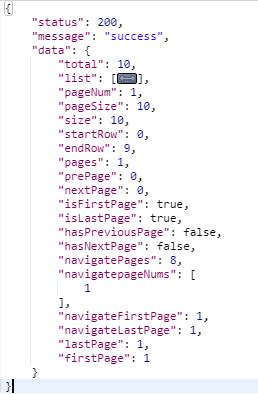

地址：https://github.com/pagehelper/Mybatis-PageHelper
在spring boot项目中使用PageHelper,只需要两步：
<dependency>
<groupId>org.mybatis.spring.boot</groupId>
<artifactId>mybatis-spring-boot-starter</artifactId>
<version>2.0.0</version>
</dependency>
<dependency>
<groupId>tk.mybatis</groupId>
<artifactId>mapper-spring-boot-starter</artifactId>
<version>2.1.5</version>
</dependency>
<dependency>
<groupId>com.github.pagehelper</groupId>
<artifactId>pagehelper-spring-boot-starter</artifactId>
<version>1.2.10</version>
</dependency> //[pageNum, pageSize] 页码 每页显示数量
PageHelper.startPage(pageNum,pageSize);
PageInfo<UserInfo> pageInfo = new PageInfo<>(UserInfoService.selectUserList());
这就是pagehelper的简单使用。但是还有高级玩法。
官方文档中，提供了很多的参数供我们配置：
helperDialect，offsetAsPageNum，rowBoundsWithCount，pageSizeZero，reasonable，params，supportMethodsArguments，autoRuntimeDialect，closeConn等等
spring boot项目里面，到application.yml中进行配置
pagehelper:
# dialect: ①
# 分页插件会自动检测当前的数据库链接，自动选择合适的分页方式（可以不设置）
helper-dialect: mysql
# 上面数据库设置后，下面的设置为true不会改变上面的结果（默认为true）
auto-dialect: true
page-size-zero: false # ②
reasonable: true # ③
# 默认值为 false，该参数对使用 RowBounds 作为分页参数时有效。（一般用不着）
offset-as-page-num: false
# 默认值为 false，RowBounds是否进行count查询（一般用不着）
row-bounds-with-count: false
#params: ④
#support-methods-arguments: 和params配合使用，具体可以看下面的讲解
# 默认值为 false。设置为 true 时，允许在运行时根据多数据源自动识别对应方言的分页
auto-runtime-dialect: false # ⑤
# 与auto-runtime-dialect配合使用
close-conn: true
# 用于控制默认不带 count 查询的方法中，是否执行 count 查询，这里设置为true后，total会为-1
default-count: false
#dialect-alias: ⑥①：默认情况下会使用 PageHelper 方式进行分页，如果想要实现自己的分页逻辑，可以实现 Dialect(com.github.pagehelper.Dialect) 接口，然后配置该属性为实现类的全限定名称。(这里不推荐这样玩，毕竟你用了别人的插件，干嘛还要多此一举呢？)
②：默认值为 false，当该参数设置为 true 时，如果 pageSize=0 或者 RowBounds.limit = 0 就会查询出全部的结果（相当于没有执行分页查询，但是返回结果仍然是 Page 类型）。
③：合法性，即纠错机制，配置reasonable为 true，这时如果 pageNum <= 0 会查询第一页，如果 pageNum > pages 会查询最后一页。
④：为了支持startPage(Object params)方法，增加了该参数来配置参数映射，用于从对象中根据属性名取值， 可以配置pageNum,pageSize,count,pageSizeZero,reasonable，不配置映射的用默认值， 默认值为
pageNum=pageNum;
pageSize=pageSize;
count=countSql;
reasonable=reasonable;
pageSizeZero=pageSizeZero。
support-methods-arguments支持通过 Mapper 接口参数来传递分页参数，默认值false，分页插件会从查询方法的参数值中，自动根据上面 params 配置的字段中取值，查找到合适的值时就会自动分页。
⑤：默认值为false。设置为 true 时，允许在运行时根据多数据源自动识别对应方言的分页,
closeConn：默认值为 true。当使用运行时动态数据源或没有设置 helperDialect 属性自动获取数据库类型时，会自动获取一个数据库连接， 通过该属性来设置是否关闭获取的这个连接，默认true关闭，设置为 false 后，不会关闭获取的连接，这个参数的设置要根据自己选择的数据源来决定。
⑥：dialect-alias 参数，允许配置自定义实现的 别名，可以用于根据JDBCURL自动获取对应实现，允许通过此种方式覆盖已有的实现，配置示例如(多个配置用分号;隔开)：
pagehelper.dialect-alias=oracle=com.github.pagehelper.dialect.helper.OracleDialect //1. offsetPage
PageHelper.offsetPage(1, 10);
return PageInfo.of(userService.findAll());
//2. Lambda
return PageHelper.startPage(1, 10).doSelectPageInfo(() -> userService.findAll()); //部分属性
System.out.println("总数量"+pageInfo.getTotal());
System.out.println("当前页查询记录"+pageInfo.getList().size());
System.out.println("当前页码"+pageInfo.getPageNum());
System.out.println("每页显示数量"+pageInfo.getPageSize());
System.out.println("总页"+pageInfo.getPages());